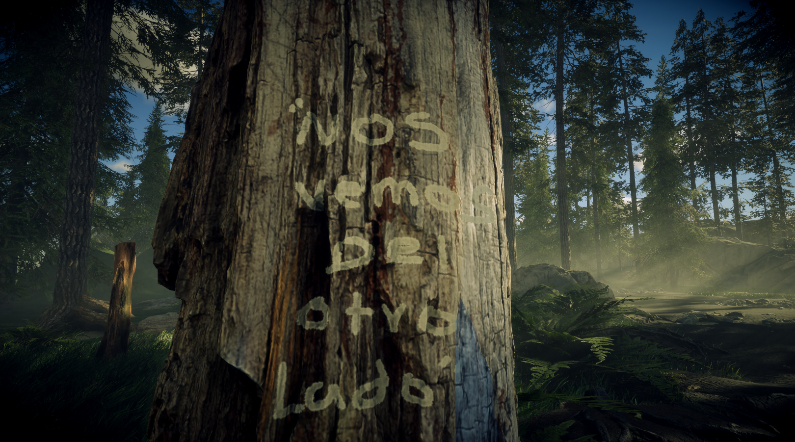
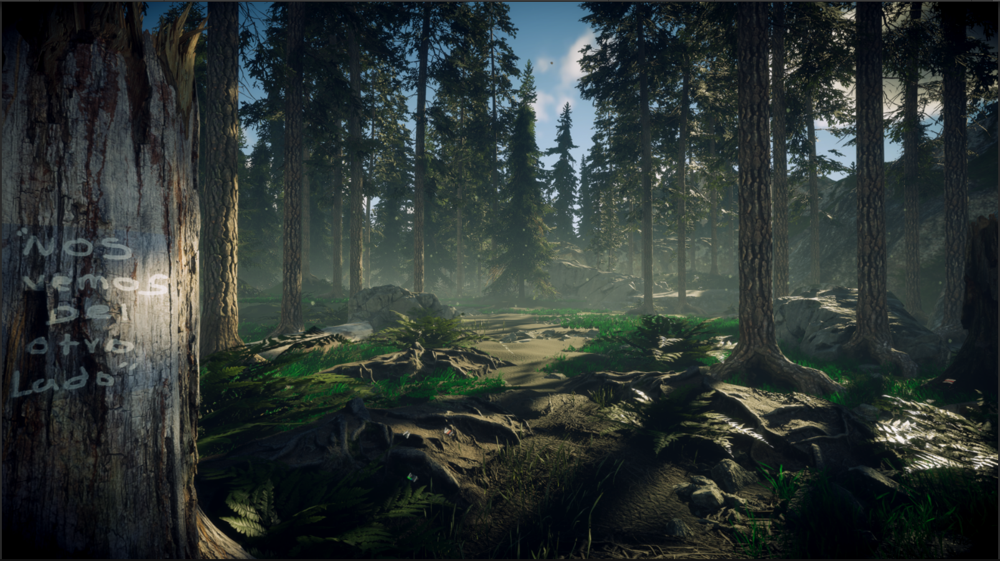
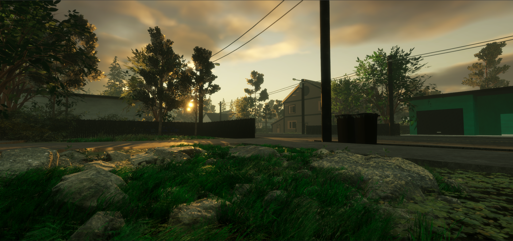

08hitos publicados
2022—26en construcción
—última actualización
Registro de supervivencia
Bitácora del proyecto
Ficha de producciónUn proyecto en construcción.
Un proyecto en construcción.
Un desarrollo documentado.
Esta página funciona como un centro de desarrollo: cada entrada conserva decisiones, prototipos, pruebas, avances y aprendizajes del proceso de creación del juego. Los detalles narrativos se mantienen reservados por ahora.
Desarrollador
Plataforma prevista
MotorUnity 3D · URP
Canal abierto
Únete a la conversación
Material de producción
Ver demo en itch.io ↗Contenido extra
Capturas y avances publicados durante el desarrollo de Frost Apocalypse.

Galería de la demo conceptual
Primer vistazo en Instagram
Visual showcasePróximamente
Videos de desarrollo
Los videos de gameplay, teasers y pruebas se incorporarán aquí cuando estén disponibles en el canal oficial.
Visitar canal de YouTube ↗